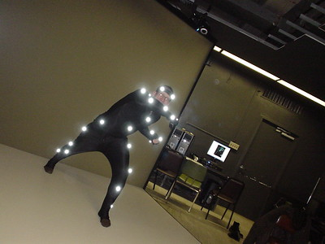
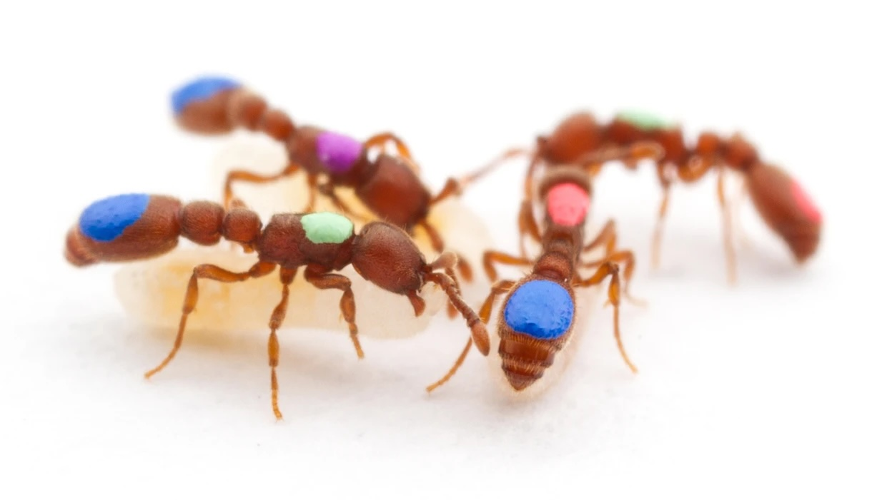
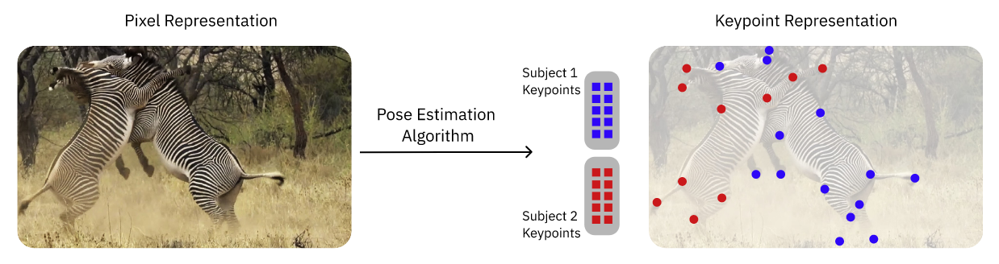
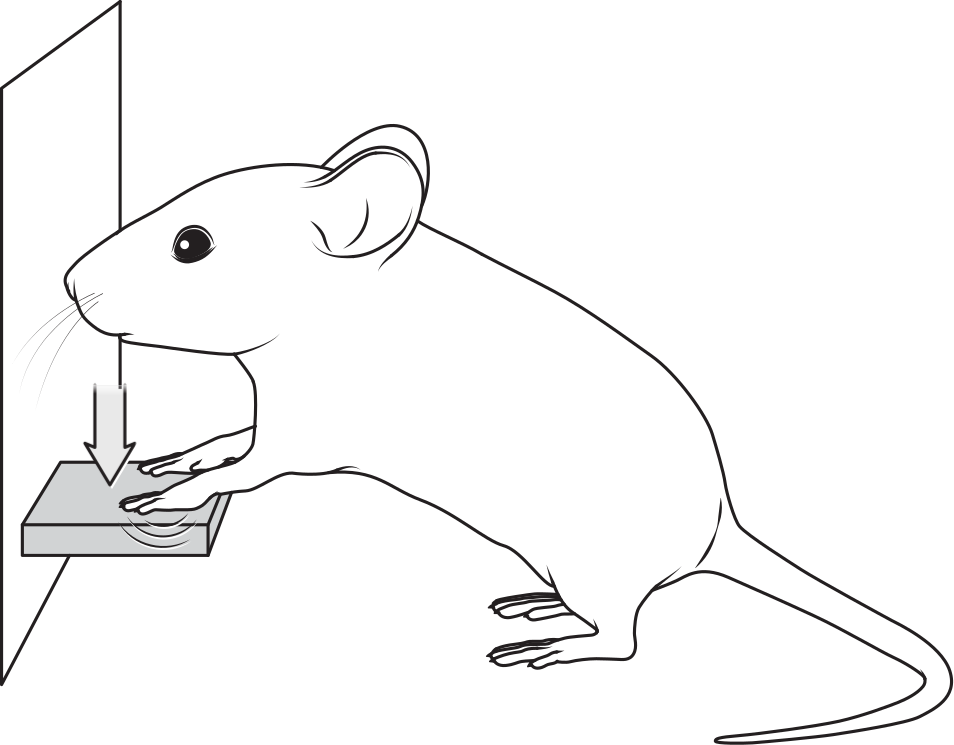
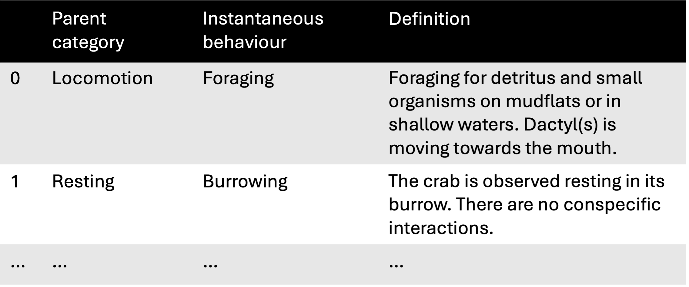
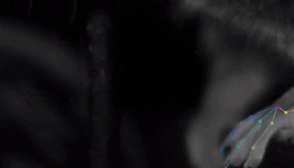
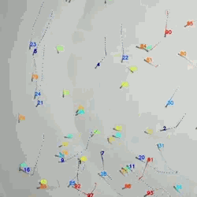

1 Introduction
1.1 Summary
Measuring animal behaviour often comes down to measuring movement, whether of the whole body or specific parts, using tools such as video cameras and GPS loggers.
Advances in computer vision, particularly deep learning-based markerless motion tracking, have transformed how we study animal behaviour, bridging traditions from multiple scientific disciplines. These methods now underpin the emerging field of computational (neuro)ethology, enabling researchers to extract precise motion data from videos, quantify behavioural features, and (in neuroscience) relate them directly to neural activity.
In this course, we focus on two key steps in this workflow: pose estimation and motion quantification, while recognising the broader ecosystem of open-source tools available.
1.2 Measuring behaviour as movement
Defining behaviour is tricky, and behavioural biologists cannot agree on a single definition (Levitis, Lidicker, and Freund 2009). The following one by Tinbergen has some historical sway:
The total movements made by the intact animal (Tinbergen 1951).
Framing behaviour as “movement” is useful. In most studies, what we actually measure is the motion of one or more animals—and/or their body parts—over time. We can see that reflected in the devices we most often use to record animal behaviour:
- 🎥 Video cameras
- 📱 Inertial measurement units (IMUs)
- 🛰️ GPS-based biologgers
- 🎤 Microphones
With the exception of microphones, these devices measure movement, at different spatial and temporal scales.
You could say that microphones capture body movements indirectly: sound waves are generated via the motion of specialised organs such as vocal cords.
In this course, we focus exclusively on video recordings. There are two main ways to extract motion from videos:
- Marker-based methods: physical markers are placed on individuals or body parts.
- Markerless methods: computer vision is used to extract user-defined features directly from videos.



- What are some advantages and disadvantages of marker-based vs. markerless methods?
- In which cases would you use one over the other?
1.3 The rise of markerless methods
There have broadly been two traditions in the study of animal behaviour (Datta et al. 2019):
- Neuroscientists have long focused on how animals generate behaviours in response to rewards and punishments, often training them to perform simple, easily measured actions.
- Ethologists, in contrast, tend to study naturalistic behaviours expressed freely in ecologically relevant contexts, aiming to understand how behaviour is structured and organised over time—for example through the use of ethograms.



In the last 10 years, computer vision methods for motion tracking have had an utterly transformative impact. Tools such as DeepLabCut (Mathis et al. 2018) and SLEAP (Pereira et al. 2022) enable researchers to track animal movements in video recordings with impressive accuracy, without the need for physical markers.



This rise is mostly driven by advances in deep learning and has dramatically accelerated the scale at which naturalistic behaviour can be measured and analysed. The old distinctions between research traditions are being erased and a new field is emerging:
In the past decade, a field we now call “computational ethology” has begun to take shape. It involves the use of machine vision and machine learning to measure and analyze the patterns of action generated by animals in contexts designed to evoke ecologically relevant behaviors (Anderson and Perona 2014). Technical progress in statistical inference and deep learning, the democratization of high-performance computing (due to falling hardware costs and the ability to rent GPUs and CPUs in the cloud), and new and creative ideas about how to apply technology to measuring naturalistic behavior have dramatically accelerated progress in this research area. (Datta et al. 2019)
- Which scientific disciplines do you represent?
- What species are you working with?
- Have you witnessed an increasing use of markerless tracking methods in your field?
Join at menti.com | use code 3904 8322.
1.4 The computational (neuro)ethology workflow
The rise of markerless methods has reconfigured the data acquisition and analysis workflows for scientists interested in measuring animal behaviour:
- Video recordings are the primary data source.
- Computer vision tools (most often based on deep learning) are used to extract user-defined features from video frames and track them over time.
- The resulting tracks can then be used to quantify various aspects of motion, such as speed, orientation, distance travelled, etc.
- The motion tracks, video features and derived kinematic features may serve as input for behaviour segmentation algorithms.
An ecosystem of open-source tools has emerged to support this workflow. See Luxem et al. (2023), Pereira, Shaevitz, and Murthy (2020), Blau et al. (2024) for comprehensive reviews. We also provide a non-exhaustive list of open-source tools in Section 1.6.
Neuroscientists are increasingly interested in precisely quantifying naturalistic behaviour, for several reasons:
if we are to understand how the brain works, we need to think about the actual problems it evolved to solve. Addressing this challenge means studying natural behavior — the kinds of behaviors generated by animals when they are free to act on their own internally-generated goals without physical or psychological restraint (source: Datta Lab website).
…detailed examination of brain parts or their selective perturbation is not sufficient to understand how the brain generates behavior (Krakauer et al. 2017).
The behavioral work needs to be as fine-grained as work at the neural level. Otherwise one is imperiled by a granularity mismatch between levels… (Krakauer et al. 2017).
This shift in focus within neuroscience has been a major driver for the rapid development of the computational approaches described above. Some refer to this field as computational neuroethology—the science of quantifying naturalistic behaviours to understand the brain (Datta et al. 2019).
The data acquisition and analysis workflows used in computational neuroethology are similar to those shown in Figure 1.5. The key difference is that derived measures of behaviour—whether continuous variables like speed or discrete actions such as “grooming”—are ultimately analysed alongside neural data, such as spike trains or calcium imaging traces (Figure 1.6).
Highly recommended readings:
1.5 The scope of this course
We will start with a primer on deep learning for computer vision (Chapter 2), going over the key concepts and technologies that underpin most markerless tracking approaches.
After that we could take a whirlwind tour through all the stages of a computaional ethology workflow Figure 1.5 and the various tools available for each step. However, since we want this to work as a two-day hands-on workshop with plenty of time for exercises and active learning, we have instead chosen to focus on two key steps:
- Chapter 3: Pose estimation and tracking with SLEAP (Pereira et al. 2022). We chose SLEAP because we know it best, but the knowledge gained should be applicable to most other pose estimation tools.
- Chapter 4: Analysing motion tracks with movement—a Python package we develop (Sirmpilatze et al. 2025)—followed by two case studies on real-world datasets Chapter 5, Chapter 6.
We want to emphasise that there are many excellent open-source tools beyond those we focus on here. The next section provides a non-exhaustive list of tools that may be useful for your own projects.
1.6 Useful open-source tools
We’ve mainly highlighted tools commonly applied to animal behaviour data. This is not a comprehensive list, and the tools appear in no particular order. Some don’t fit neatly into the categories below, and their classification is somewhat subjective. If you’d like to add a tool you’ve built or enjoy using, please open an issue or submit a pull request.
1.6.1 Data acquisition
1.6.2 Video processing
1.6.3 Motion tracking
- DeepLabCut Mathis et al. (2018); Lauer et al. (2022)
- SLEAP Pereira et al. (2022)
- LightningPose Biderman et al. (2024)
- TRex Walter and Couzin (2021)
- idtracker.ai Romero-Ferrero et al. (2019)
- Anipose Karashchuk et al. (2021)
- DANNCE Dunn et al. (2021)
- DeepPoseKit Graving et al. (2019)
- FastTrack Gallois and Candelier (2021)
- DeepFly3D Günel et al. (2019)
1.6.4 Motion quantification
- movement Sirmpilatze et al. (2025)
- animovement Roald-Arbøl (2024)
- PyRat De Almeida et al. (2022)
- DLC2Kinematics
- pyomeca Martinez, Michaud, and Begon (2020)
- movingpandas Graser (2019)
- scikit-mobility Pappalardo et al. (2022)
1.6.5 Behaviour segmentation
- (Keypoint) MoSeq Wiltschko et al. (2015); Weinreb (2024)
- VAME Luxem et al. (2022)
- B-SOiD Hsu and Yttri (2021)
- A-SOiD Schweihoff et al. (2022)
- DeepEthogram Bohnslav et al. (2021)
- SimBA Goodwin et al. (2024)
- DeepOF Miranda et al. (2023)
- LISBET Chindemi, Girard, and Bellone (2023)
- DLC2action
- LabGym Hu et al. (2023)
- JABS Beane et al. (2023)
- JAABA Kabra et al. (2013)
- MotionMapper Berman et al. (2014)
- BORIS Friard and Gamba (2016)